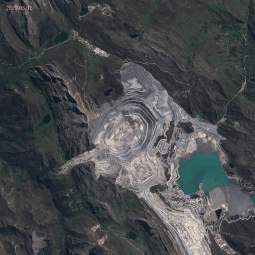
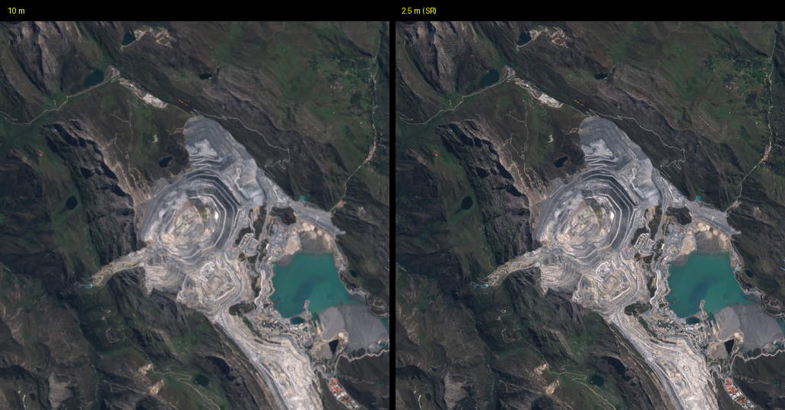
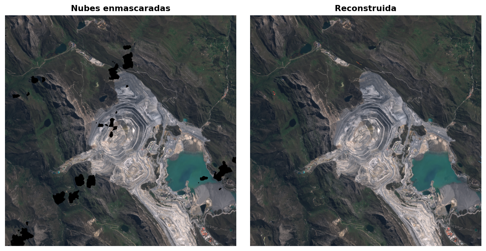

satcube¶

De imágenes Sentinel-2 dispersas a cubos limpios, alineados y super-resueltos 🛰️


GitHub: https://github.com/andesdatacube/satcube 🌐
PyPI: https://pypi.org/project/satcube/ 🛠️
Overview 📊¶
satcube convierte una serie de imágenes Sentinel-2 dispersas, tapadas por nubes y desalineadas en un cubo mensual limpio, continuo y super-resuelto a 2.5 m, con una API encadenable. Por dentro usa cubexpress para el acceso, CloudSEN12 para nubes, satalign para el co-registro y SEN2SR para la super-resolución.

Key features ✨¶
- Acceso inteligente: descubre y descarga S2 filtrando por nubes antes de bajar. 🛰️
- Co-registro sub-píxel: alinea toda la serie a la escena más limpia. 📐
- Enmascarado de nubes: máscara píxel a píxel con deep learning (CloudSEN12). ☁️
- Reconstrucción temporal: gap-filling, composites mensuales, despike e interpolación. 🧩
- Super-resolución 4×: de 10 m a 2.5 m con SEN2SR. 🔍
- Un solo comando: todo el pipeline con
process_all. 🚀
Installation ⚙️¶
Quickstart 🚀¶
Todo el pipeline en una llamada, de crudo a cubo super-resuelto:
import ee
import satcube
ee.Authenticate()
ee.Initialize(project="ee-your-project")
meta = satcube.metadata(
lon=-77.06165, lat=-9.53704,
width=256, height=256,
start="2018-01-01", end="2019-12-31",
max_cloud=30,
).select_bands("B1", "B2", "B3", "B4", "B5", "B6", "B7", "B8", "B8A", "B9", "B10", "B11", "B12")
crudo = meta.download(output_dir="produccion/raw")
final = crudo.process_all(
output_dir="produccion",
min_clear_pct=70,
max_remaining_gaps=1.0,
device="cuda", # usa "cpu" si no tienes GPU
sr_variant="SEN2SRLite",
)
print(f"{len(final)} composites mensuales super-resueltos a 2.5 m")

Paso a paso 🛠️¶
Si prefieres controlar cada etapa (y entender qué hace cada una):
# 1. Metadata + descarga
meta = satcube.metadata(lon=-77.06165, lat=-9.53704, width=1024, height=1024,
start="2022-05-01", end="2022-09-01", max_cloud=30)
meta = meta.select_bands("B1","B2","B3","B4","B5","B6","B7","B8","B8A","B9","B10","B11","B12")
cubo = meta.download(output_dir="raw")
# 2. Co-registro sub-pixel
alineado = cubo.align(output_dir="aligned")
# 3. Enmascarado de nubes y filtro de calidad
masked = alineado.cloud_masking(output_dir="masked", device="cuda", save_mask=True)
limpio = masked[masked["clear_pct"] >= 70]
# 4. Gap-filling + filtro de huecos
relleno = limpio.gapfill(output_dir="gapfilled")
relleno_ok = relleno[relleno["remaining_gaps_pct"] <= 1.0]
# 5. Composites mensuales + afinamiento
mensual = relleno_ok.composite(output_dir="monthly", agg_method="median")
interp = mensual.interpolate(output_dir="interp", despike_threshold=0.15)
suavizado = interp.smooth(output_dir="smooth", smooth_w=7, smooth_p=2)
# 6. Super-resolucion 10 m -> 2.5 m
sr = suavizado.superresolve(output_dir="sr", variant="SEN2SRLite", device="cuda")

Polígonos 🗺️¶
Para un distrito o cuenca en vez de un parche cuadrado:
Acepta shapely, WKT o GeoJSON.
Documentación 📚¶
Guías completas en la documentación: instalación, quickstart y una explicación de cada etapa del pipeline.